Make predictions from an sdmTMB model. The function can predict on the original or new data.
# S3 method for sdmTMB predict( object, newdata = NULL, se_fit = FALSE, xy_cols = c("X", "Y"), return_tmb_object = FALSE, area = 1, re_form = NULL, re_form_iid = NULL, ... )
Arguments
| object | An object from |
|---|---|
| newdata | An optional new data frame. This should be a data frame with the same predictor columns as in the fitted data and a time column (if this is a spatiotemporal model) with the same name as in the fitted data. There should be predictor data for each year in the original data set. |
| se_fit | Should standard errors on predictions at the new locations given by
|
| xy_cols | Depreciated. Was: a character vector of
length 2 that gives the column names of the x and y coordinates in
|
| return_tmb_object | Logical. If |
| area | A vector of areas for survey grid cells. Only necessary if the
output will be passed to |
| re_form |
|
| re_form_iid |
|
| ... | Not implemented. |
Value
If return_tmb_object = FALSE:
A data frame:
est: Estimate in link space (everything is in link space)est_non_rf: Estimate from everything that isn't a random fieldest_rf: Estimate from all random fields combinedomega_s: Spatial (intercept) random field that is constant through timezeta_s: Spatial slope random fieldepsilon_st: Spatiotemporal (intercept) random fields (could be independent draws each year or AR1)
If return_tmb_object = TRUE:
A list:
data: The data frame described abovereport: The TMB report on parameter valuesobj: The TMB object returned from the prediction run.fit_obj: The original TMB model object.
You likely only need the data element as an end user. The other elements
are included for other functions.
Examples
# We'll only use a small number of knots so this example runs quickly # but you will likely want to use many more in applied situations. library(ggplot2) d <- pcod pcod_spde <- make_mesh(d, c("X", "Y"), cutoff = 30) # a coarse mesh for example speed m <- sdmTMB( data = d, formula = density ~ 0 + as.factor(year) + depth_scaled + depth_scaled2, time = "year", spde = pcod_spde, family = tweedie(link = "log") ) # Predictions at original data locations ------------------------------- predictions <- predict(m) head(predictions)#> year X Y depth density present lat lon #> 888 2003 446.4752 5793.426 201 113.13848 1 52.28858 -129.7847 #> 887 2003 446.4594 5800.136 212 41.70492 1 52.34890 -129.7860 #> 921 2003 448.5987 5801.687 220 0.00000 0 52.36305 -129.7549 #> 756 2003 436.9157 5802.305 197 15.70614 1 52.36738 -129.9265 #> 521 2003 420.6101 5771.055 256 0.00000 0 52.08437 -130.1586 #> 488 2003 417.7130 5772.205 293 0.00000 0 52.09428 -130.2012 #> depth_mean depth_sd depth_scaled depth_scaled2 est est_non_rf #> 888 5.155194 0.4448783 0.3329252 0.11083919 3.45791193 3.2225136 #> 887 5.155194 0.4448783 0.4526914 0.20492947 3.35693827 2.9247801 #> 921 5.155194 0.4448783 0.5359529 0.28724555 3.18090096 2.6958367 #> 756 5.155194 0.4448783 0.2877417 0.08279527 3.78707027 3.3251565 #> 521 5.155194 0.4448783 0.8766077 0.76844097 1.08926145 1.5715552 #> 488 5.155194 0.4448783 1.1800505 1.39251928 -0.08533746 0.3162011 #> est_rf omega_s zeta_s epsilon_st #> 888 0.2353983 -0.17931253 0 0.4147108 #> 887 0.4321581 -0.07778678 0 0.5099449 #> 921 0.4850643 -0.08538943 0 0.5704537 #> 756 0.4619137 0.12197624 0 0.3399375 #> 521 -0.4822937 -0.09803081 0 -0.3842629 #> 488 -0.4015386 -0.07049222 0 -0.3310463predictions$resids <- residuals(m) # randomized quantile residuals # \donttest{ ggplot(predictions, aes(X, Y, col = resids)) + scale_colour_gradient2() + geom_point() + facet_wrap(~year)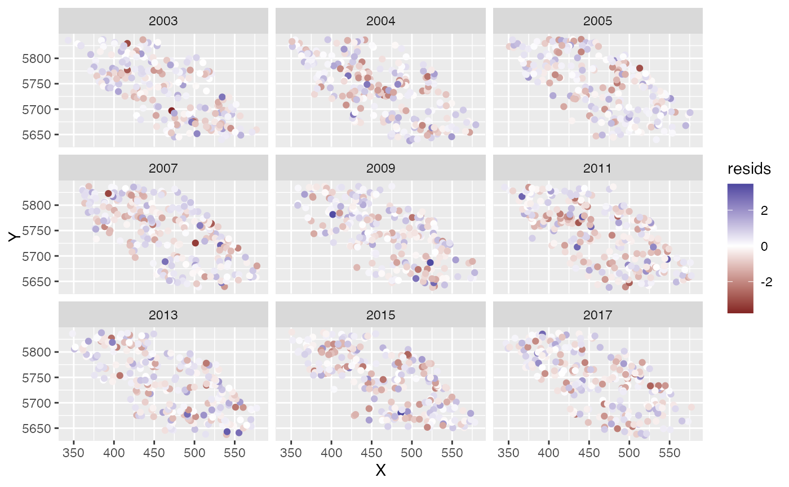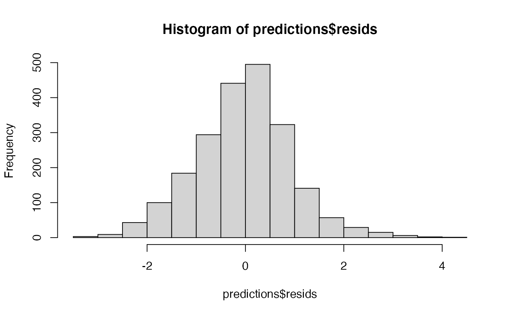# Predictions onto new data -------------------------------------------- predictions <- predict(m, newdata = qcs_grid) # A short function for plotting our predictions: plot_map <- function(dat, column = "est") { ggplot(dat, aes_string("X", "Y", fill = column)) + geom_raster() + facet_wrap(~year) + coord_fixed() } plot_map(predictions, "exp(est)") + scale_fill_viridis_c(trans = "sqrt") + ggtitle("Prediction (fixed effects + all random effects)")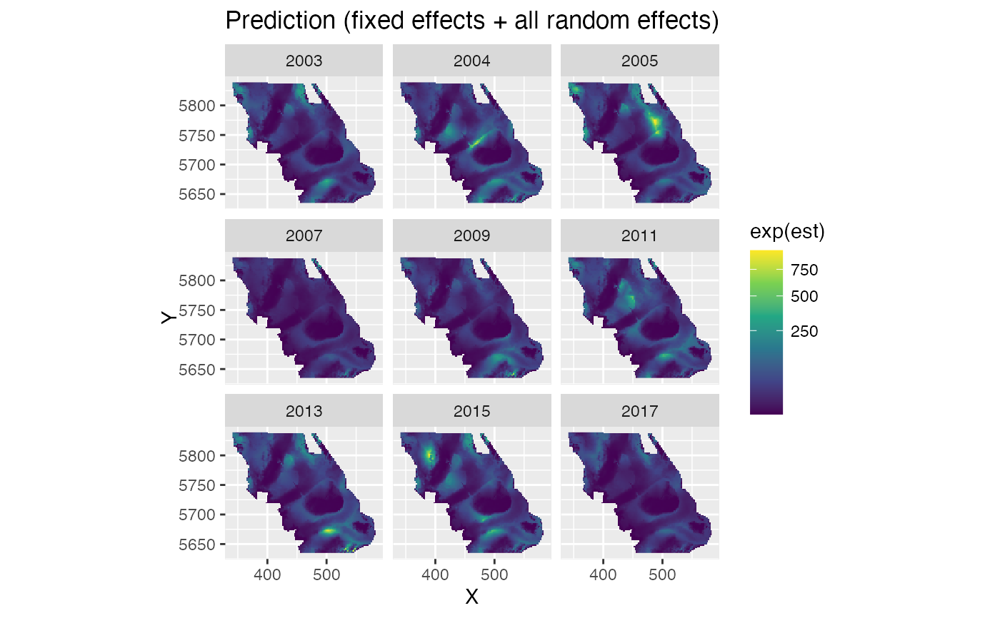plot_map(predictions, "exp(est_non_rf)") + ggtitle("Prediction (fixed effects and any time-varying effects)") + scale_fill_viridis_c(trans = "sqrt")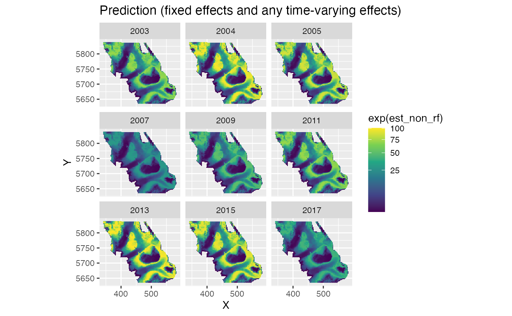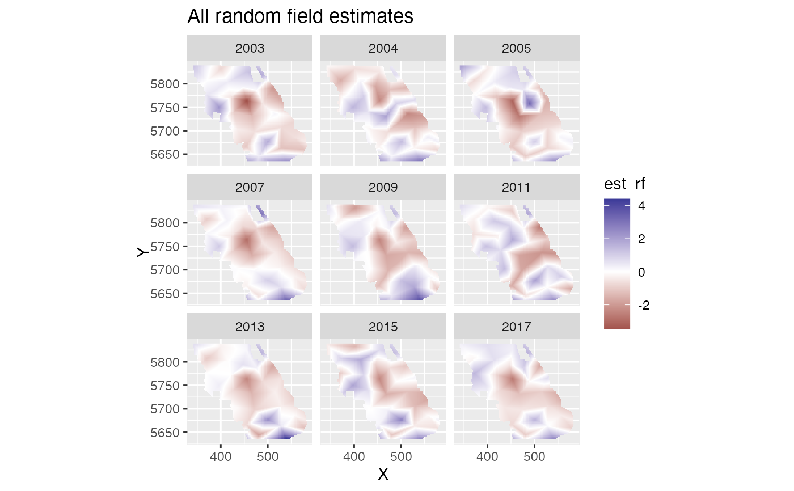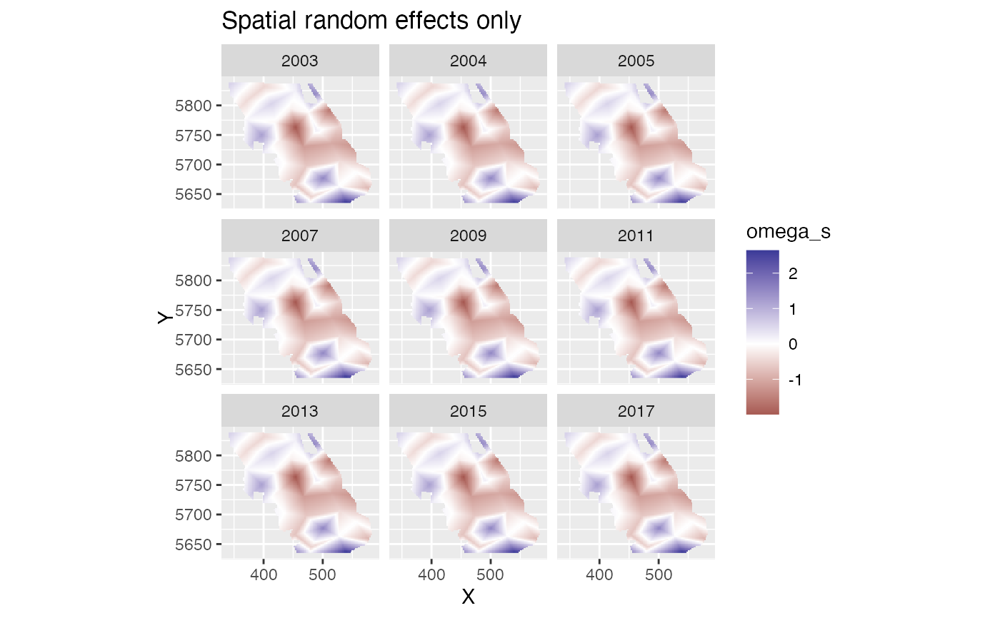plot_map(predictions, "epsilon_st") + ggtitle("Spatiotemporal random effects only") + scale_fill_gradient2()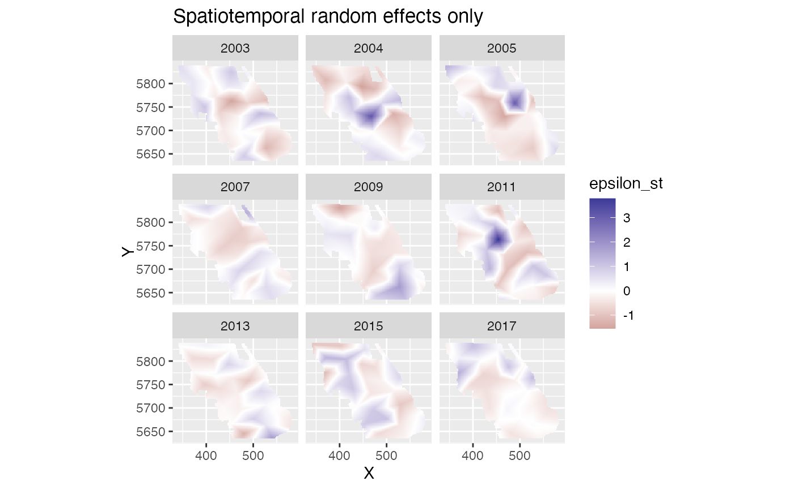# Visualizing a marginal effect ---------------------------------------- nd <- data.frame(depth_scaled = seq(min(d$depth_scaled), max(d$depth_scaled), length.out = 100)) nd$depth_scaled2 <- nd$depth_scaled^2 # You'll need at least one time element. If time isn't also a fixed effect # then it doesn't matter what you pick: nd$year <- 2003L p <- predict(m, newdata = nd, se_fit = TRUE, re_form = NA) ggplot(p, aes(depth_scaled, exp(est), ymin = exp(est - 1.96 * est_se), ymax = exp(est + 1.96 * est_se))) + geom_line() + geom_ribbon(alpha = 0.4)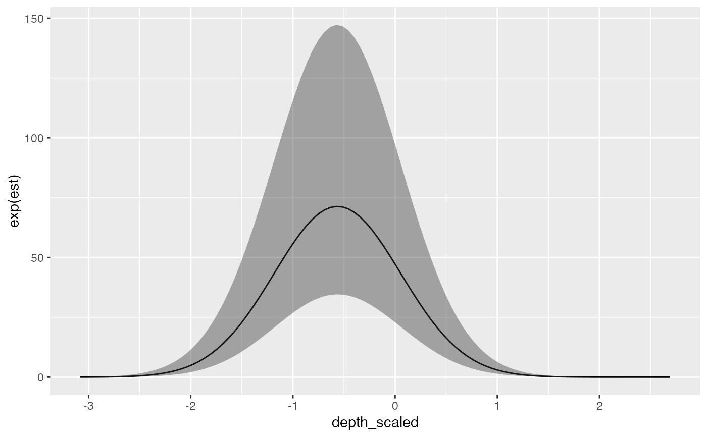# Plotting marginal effect of a spline --------------------------------- m_gam <- sdmTMB( data = d, formula = density ~ 0 + as.factor(year) + s(depth_scaled, k = 3), time = "year", spde = pcod_spde, family = tweedie(link = "log") ) nd <- data.frame(depth_scaled = seq(min(d$depth_scaled), max(d$depth_scaled), length.out = 100)) nd$year <- 2003L p <- predict(m_gam, newdata = nd, se_fit = TRUE, re_form = NA) ggplot(p, aes(depth_scaled, exp(est), ymin = exp(est - 1.96 * est_se), ymax = exp(est + 1.96 * est_se))) + geom_line() + geom_ribbon(alpha = 0.4)# Forecasting ---------------------------------------------------------- pcod_spde <- make_mesh(d, c("X", "Y"), cutoff = 15) unique(d$year)#> [1] 2003 2004 2005 2007 2009 2011 2013 2015 2017m <- sdmTMB( data = d, formula = density ~ 1, ar1_fields = TRUE, # using an AR1 to have something to forecast with extra_time = 2019L, include_spatial = FALSE, time = "year", spde = pcod_spde, family = tweedie(link = "log") ) # Add a year to our grid: grid2019 <- qcs_grid[qcs_grid$year == max(qcs_grid$year), ] grid2019$year <- 2019L # `L` because `year` is an integer in the data qcsgrid_forecast <- rbind(qcs_grid, grid2019) predictions <- predict(m, newdata = qcsgrid_forecast) plot_map(predictions, "exp(est)") + scale_fill_viridis_c(trans = "log10")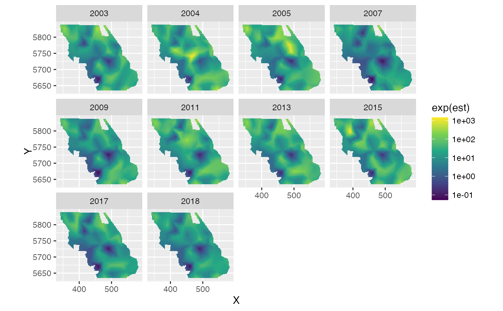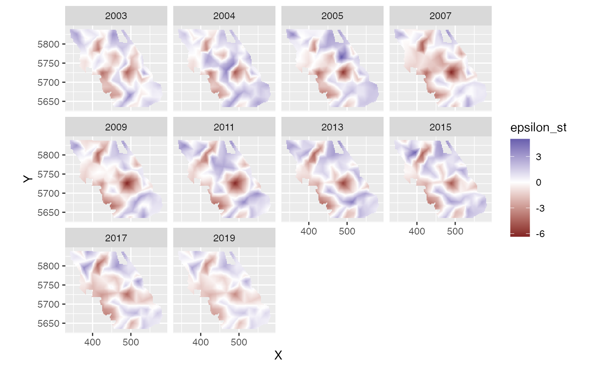# Estimating local trends ---------------------------------------------- pcod_spde <- make_mesh(pcod, c("X", "Y"), cutoff = 25) m <- sdmTMB(data = pcod, formula = density ~ depth_scaled + depth_scaled2, spde = pcod_spde, family = tweedie(link = "log"), spatial_trend = TRUE, time = "year", spatial_only = TRUE) p <- predict(m, newdata = qcs_grid) plot_map(p, "zeta_s") + ggtitle("Spatial slopes") + scale_fill_gradient2()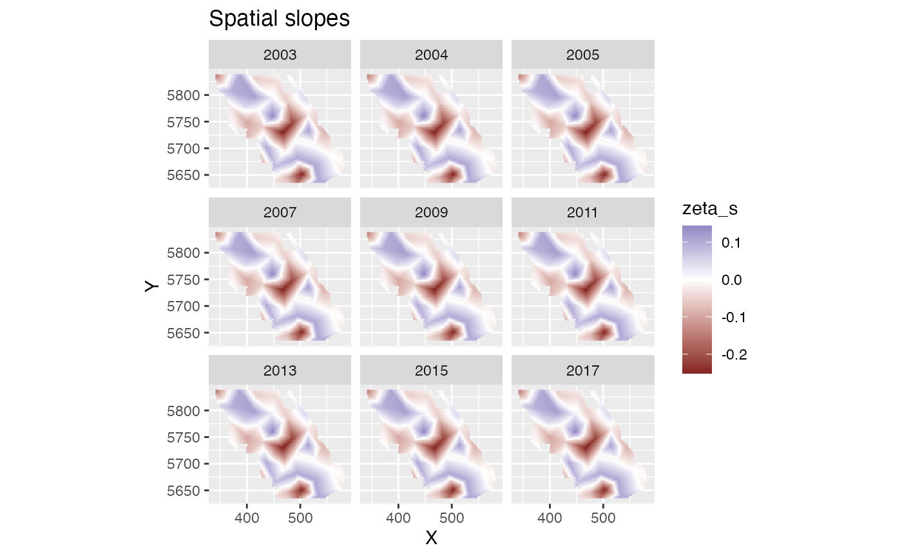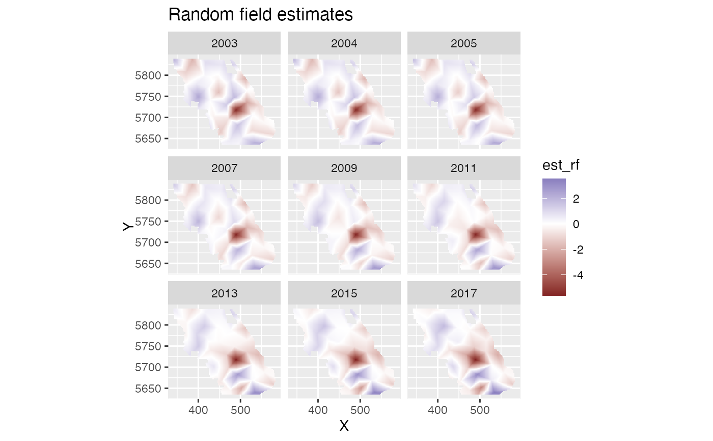plot_map(p, "exp(est_non_rf)") + ggtitle("Prediction (fixed effects only)") + scale_fill_viridis_c(trans = "sqrt")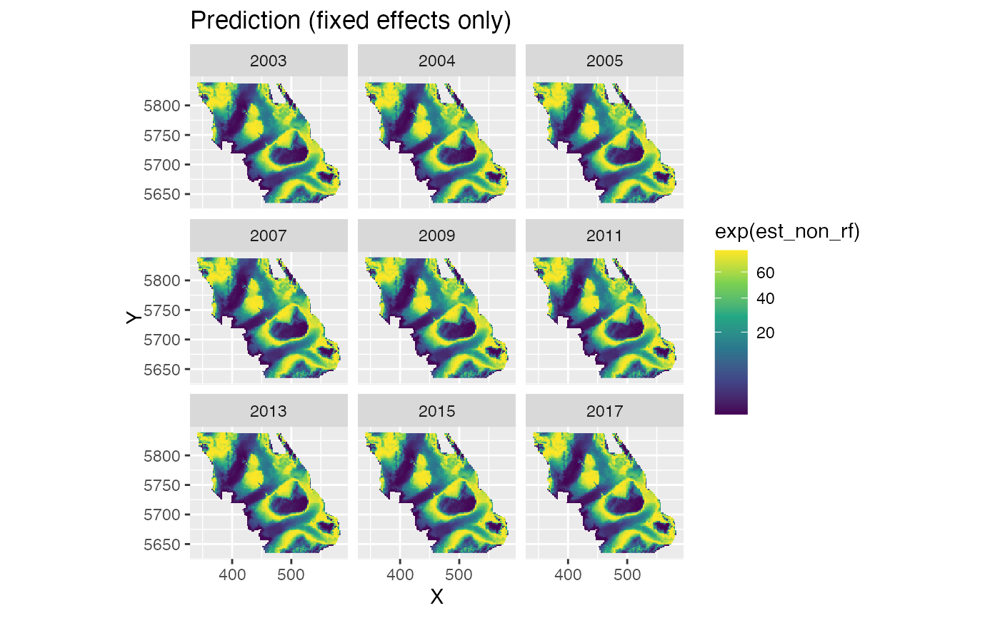plot_map(p, "exp(est)") + ggtitle("Prediction (fixed effects + all random effects)") + scale_fill_viridis_c(trans = "sqrt")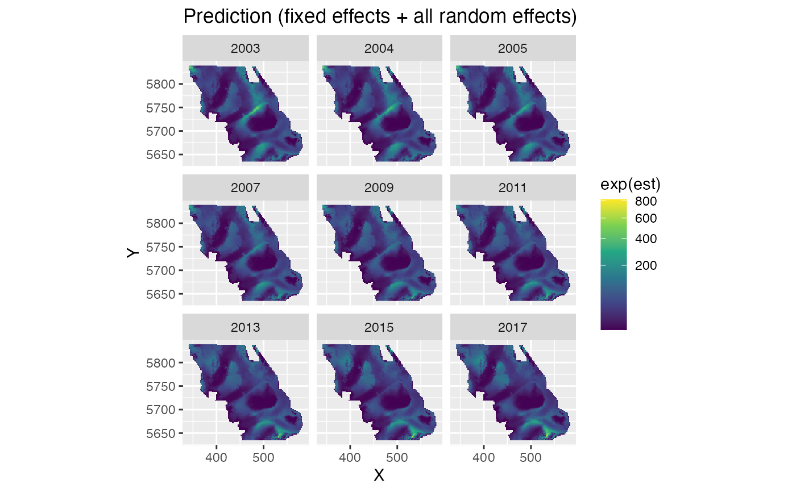# }